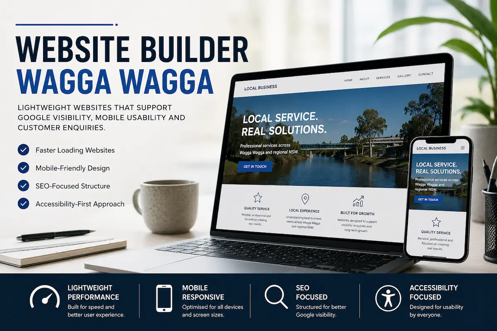
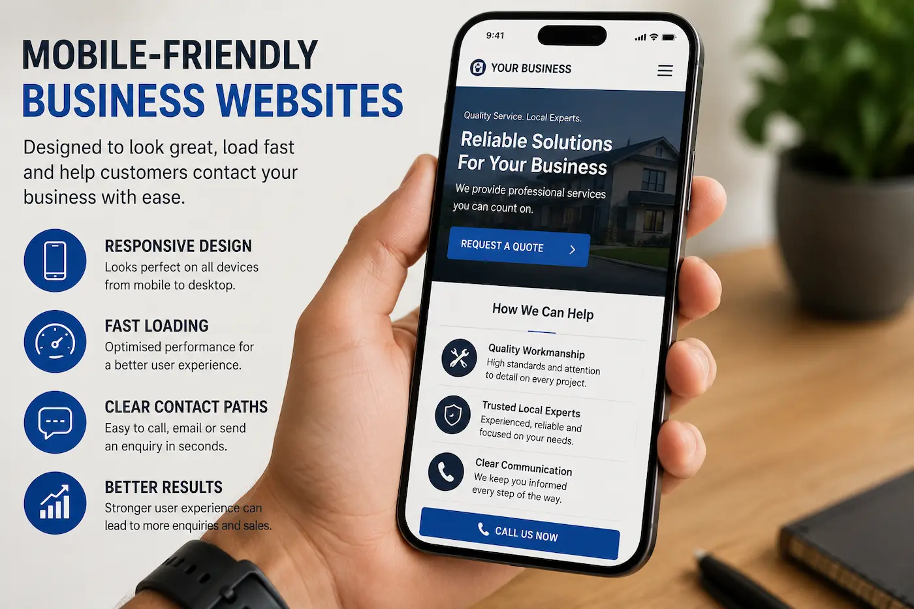
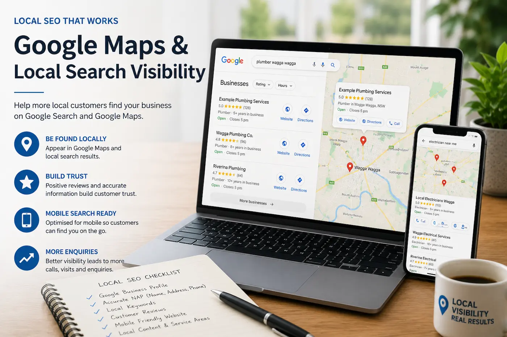
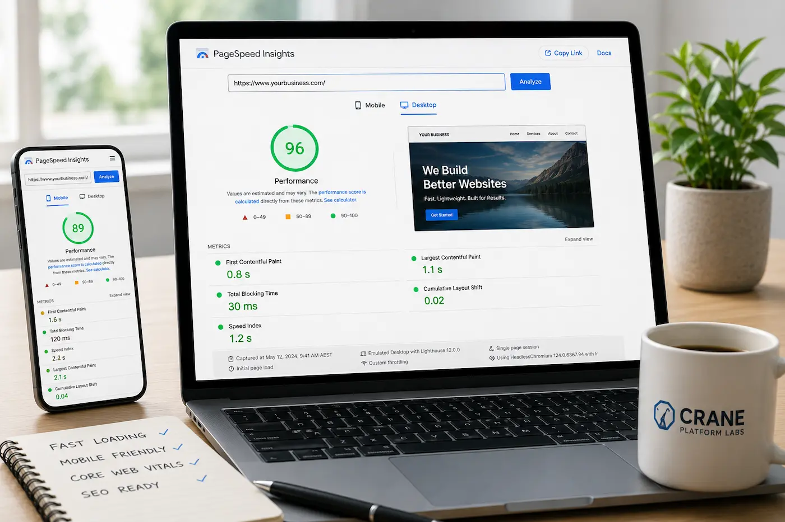

Typical Website Builders
- Heavier page sizes and scripts
- Limited SEO flexibility
- Generic template layouts
- Slower mobile performance
- More difficult performance optimisation
- Reduced flexibility as businesses grow
WAGGA WAGGA WEBSITE BUILDER GUIDE
Many businesses in Wagga Wagga choose website builders expecting a fast and affordable solution, but not all website builders provide strong performance, mobile usability or long-term SEO results.
Modern business websites should do more than simply look professional. They should load quickly, function properly across mobile devices and provide clear pathways for customers to contact your business online.
As more customers search for businesses across Wagga Wagga, Junee, Albury and regional NSW from mobile phones, lightweight website performance and Google visibility have become increasingly important for local businesses.
In this guide:
Lightweight websites built for regional NSW businesses using modern web standards.
Designed for mobile usability, accessibility and Google performance across regional NSW.

WEBSITE BUILDER COMPARISON
Many businesses across Wagga Wagga choose website builders because they appear quick and affordable, however not all website builders are designed for long-term website performance, customer usability or Google visibility.
While template website builders may suit some small projects, businesses relying on customer enquiries, mobile traffic and local Google visibility often benefit from faster and more performance-focused website structures.
Businesses across Wagga Wagga, Albury, Junee and regional NSW increasingly rely on mobile traffic, Google Maps visibility and fast customer access to information online.
Choosing a website structure focused on performance, accessibility and customer usability may help improve long-term enquiry generation and customer trust online.
MOBILE USABILITY
Most customers searching for businesses across Wagga Wagga, Albury, Junee and regional NSW now browse websites primarily from mobile phones rather than desktop computers.
Modern business websites should load quickly, function smoothly across smaller screens and allow customers to easily access contact information, services and enquiry forms without frustration.
Websites with cluttered layouts, oversized popups, slow-loading elements and poor mobile responsiveness may negatively affect customer trust, usability and overall browsing experience.
Many template website builders rely heavily on unnecessary scripts, animations and large assets that may reduce mobile performance and create slower loading speeds across regional internet connections.
Lightweight business websites built using responsive layouts, semantic structure and accessibility-focused design generally create stronger mobile usability, improved customer experience and clearer customer pathways online.


GOOGLE VISIBILITY
Many customers searching for businesses across Wagga Wagga and regional NSW now rely heavily on Google Search and Google Maps to compare businesses, services and customer reviews online.
Modern business websites should support strong mobile usability, lightweight performance and clear semantic structure while helping customers quickly find important business information online.
Businesses with faster websites, accessibility-focused layouts and responsive mobile design may create stronger customer experience and improved long-term Google visibility.
Local SEO now focuses heavily on customer usability, mobile responsiveness, accessibility, semantic structure and overall browsing experience rather than keyword repetition alone.
As competition across Wagga Wagga continues increasing online, businesses with lightweight and performance-focused websites may improve customer trust, enquiry generation and local search visibility over time.
WEBSITE PERFORMANCE
Website speed now plays a major role in customer usability, mobile browsing experience and long-term website performance across Google Search and modern mobile devices.
Slow-loading websites may increase bounce rates, reduce customer trust and negatively affect customer enquiries — particularly for businesses competing locally across Wagga Wagga and regional NSW.
Many template website builders rely heavily on unnecessary scripts, oversized assets, animations and third-party tools that may reduce performance and create slower loading speeds across mobile networks and regional internet connections.
Lightweight business websites built using clean semantic code, responsive layouts and optimised image performance generally create faster browsing experience, improved mobile usability and clearer customer pathways online.
Google increasingly evaluates websites using page speed, accessibility, mobile usability and customer experience signals when understanding modern business websites and local search relevance.
Businesses across Wagga Wagga, Albury, Junee and regional NSW increasingly rely on fast-loading websites to support Google visibility, customer trust and long-term enquiry generation online.

REGIONAL NSW WEBSITE DESIGN
Crane Platform Labs builds lightweight business websites designed to support Google visibility, accessibility, mobile usability and long-term customer enquiries for businesses across Wagga Wagga and regional NSW.
From tradies and tourism operators to cafés, hospitality venues and regional service businesses, modern websites increasingly need to support mobile browsing experience, fast loading speeds and clear customer usability online.
Businesses across Wagga Wagga, Albury, Junee, Temora and Cootamundra are increasingly competing for visibility across Google Search and Google Maps while customers compare businesses directly from mobile devices.
Clean semantic code and optimised assets designed for faster loading speeds, improved mobile usability and better browsing experience across regional NSW.
Responsive layouts designed for modern phones, tablets and mobile-first browsing behaviour across Wagga Wagga and regional NSW businesses.
Structured content and local SEO foundations designed to support stronger Google visibility and long-term search performance across regional NSW.
Accessibility-focused layouts and semantic structure designed to improve usability, readability and customer experience across modern devices.
Lightweight websites with responsive layouts, accessibility-focused structure and optimised performance may help businesses improve customer trust, enquiry generation and long-term Google visibility online.
WEBSITE BUILDER FAQ
Businesses across Wagga Wagga and regional NSW often compare website builders, business websites, Google visibility and mobile usability before investing in a new website.
Website builders may suit some small projects, however many businesses relying on customer enquiries, mobile traffic and Google visibility often benefit from more lightweight and performance-focused website structures.
Website speed, mobile usability, accessibility and semantic structure may all influence how search engines understand business websites. Some website builders create heavier page structures that may affect performance and usability.
Slow business websites are often caused by oversized images, unnecessary scripts, excessive animations, template bloat and poor mobile optimisation.
Most customers across Wagga Wagga and regional NSW now browse websites from mobile phones. Responsive mobile usability is increasingly important for customer trust and enquiry generation online.
Lightweight semantic code, responsive layouts, optimised image performance and accessibility-focused design generally help improve customer usability and long-term website performance.
Faster-loading websites may help improve customer experience, reduce bounce rates and create clearer customer pathways that support stronger long-term enquiry generation.
LIGHTWEIGHT BUSINESS WEBSITES
Crane Platform Labs builds lightweight business websites designed to support Google visibility, mobile usability and long-term customer enquiries across Wagga Wagga and regional NSW.
Modern business websites should support responsive mobile browsing, accessibility, semantic structure and fast-loading performance while helping businesses improve customer trust and online visibility.
Businesses across Wagga Wagga, Albury, Junee, Temora and regional NSW increasingly rely on mobile-friendly websites and Google visibility to help customers quickly find services, compare businesses and contact businesses online.
Lightweight websites built for regional NSW businesses using modern web standards.